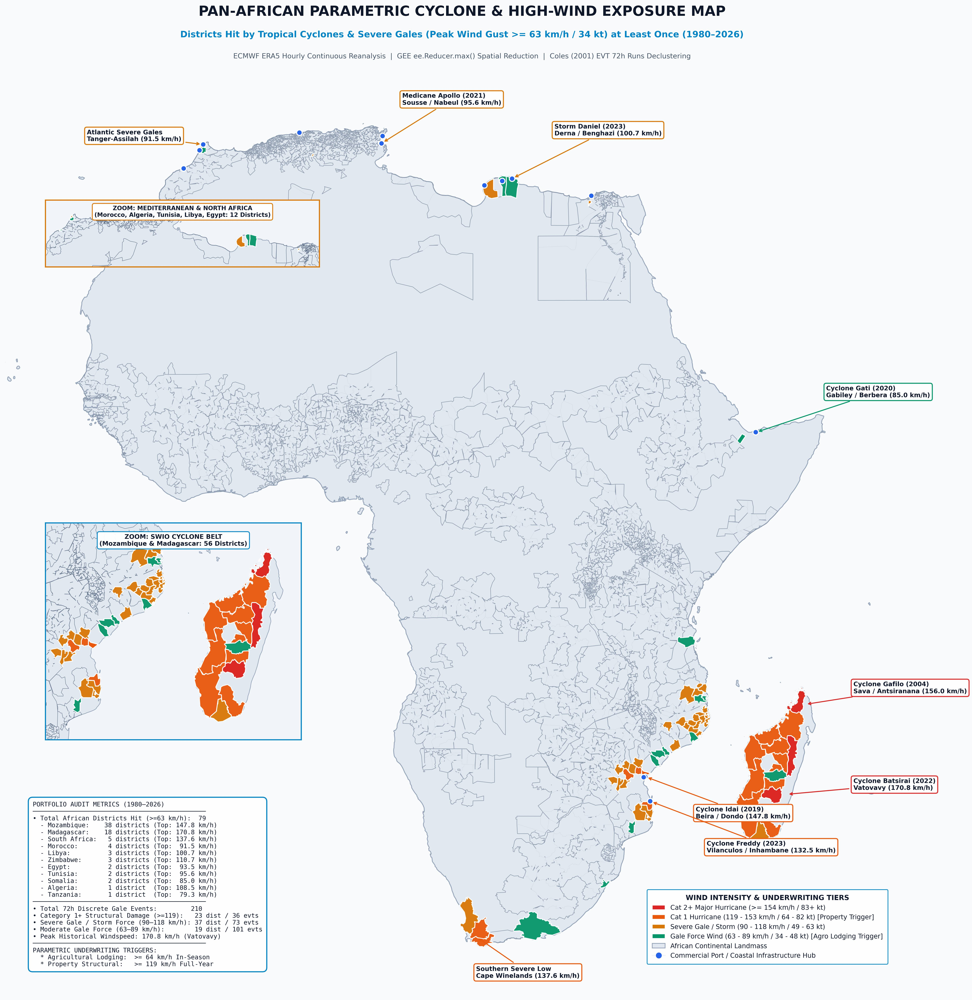
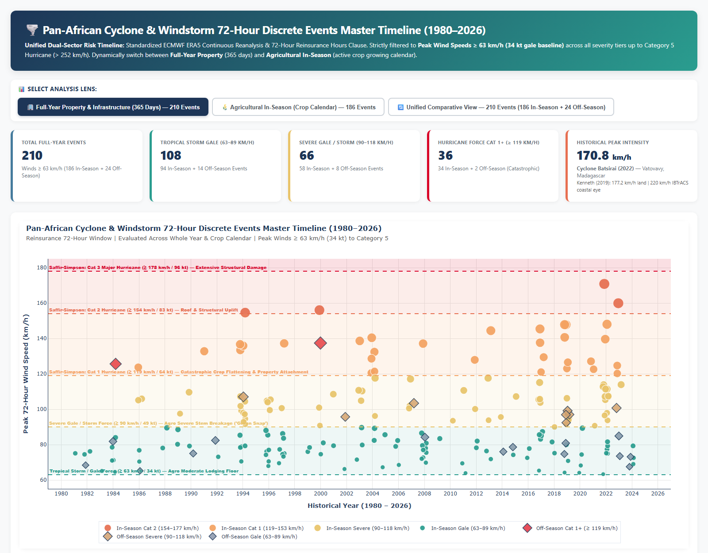
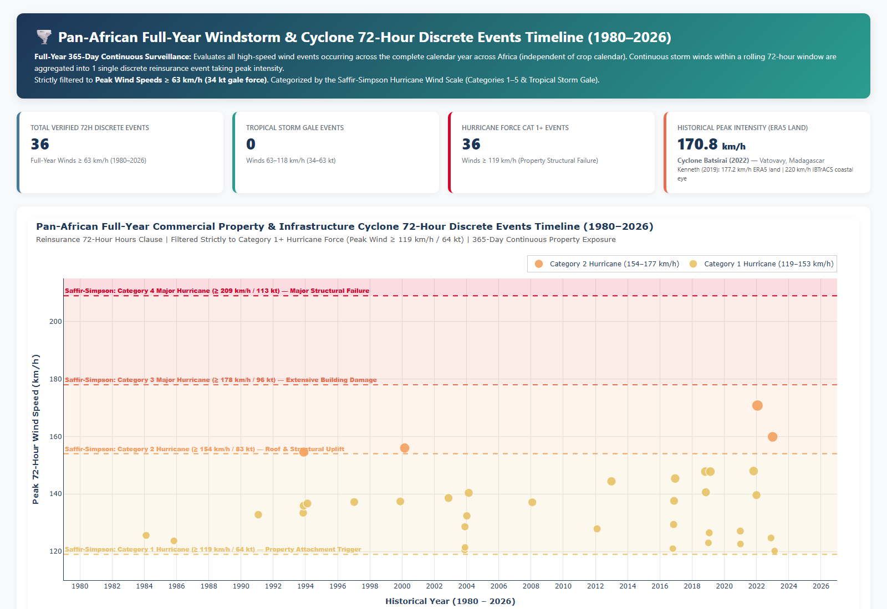
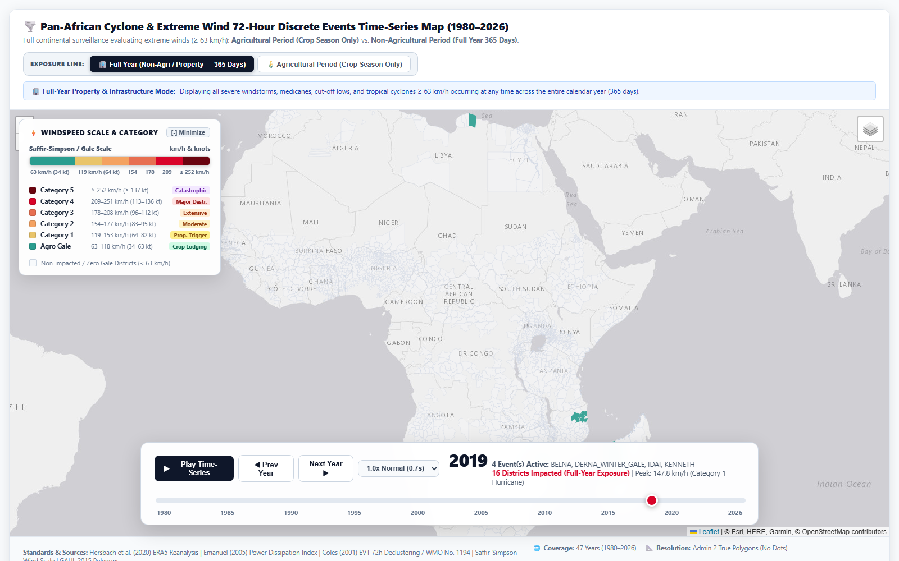

Document Type: Formal Technical Methodology & Scientific Reference Guide
Location:Africa-Cyclone-Study/Notes/ASR_Cyclone_Parametric_Methodology_and_Architecture_Report.md
Project: ASR Multi-Peril Parametric Insurance Research Study
Target Audience: Reinsurance Underwriters, Catastrophe Modelers, Quantitative Risk Analysts
Version: 3.0 (ERA5 Spatial Maximum Reduction viaee.Reducer.max())
Status: Production & Handover Ready
The ASR Pan-African Parametric Cyclone & High-Wind Risk Framework provides institutional catastrophe risk quantification across 2,086 monitored administrative districts in 32 African nations, evaluated across a 47-year historical surveillance record (1980–2026).
The model employs ECMWF ERA5 Hourly Reanalysis (31 km spatial resolution, hourly temporal cadence) processed through Google Earth Engine (GEE) cloud-native spatial reduction (ee.Reducer.max()) to capture the true peak wind gust across the full polygon extent of each administrative district. All event clustering follows Extreme Value Theory (EVT) 72-hour runs declustering (Coles, 2001; Davison & Smith, 1990) and the WMO synoptic vortex transit window (WMO No. 1194), standardizing independent discrete hazard event identification.
| Portfolio Segment | Count | Description |
|---|---|---|
| Maize Agricultural Districts | 2,066 | GAUL Level 2 districts with explicit Maize 1 crop classification (GEOGLAM / FAO) |
| Non-Maize Commercial Ports & Urban Hubs | 20 | Districts hit at least once by >= 63 km/h wind that are not in the maize domain |
| Total Monitored Portfolio | 2,086 | Pan-African cyclone & high-wind exposure coverage |
| Trigger | Threshold | Surveillance Period | Physical Damage Mechanism |
|---|---|---|---|
| Agricultural Crop Lodging | >= 64 km/h (34 kt) | Active Crop Season (Planting to Harvest DOY) | Stem lodging, canopy shear, panicle/tassel breakage |
| Property Structural Failure | >= 119 km/h (64 kt) | Full Calendar Year (365 days) | Roof uplift, wall collapse, infrastructure rupture (Saffir-Simpson Cat 1+) |
ECMWF/ERA5/HOURLY)wind_gust_since_previous_post_processing_10m -- instantaneous maximum 10-metre wind gust (m/s)A frequent point of inquiry among technical reviewers and risk underwriters is the precise meaning of the ECMWF parameter name wind_gust_since_previous_post_processing_10m and why it is selected over standard hourly 10-metre mean wind components (u10, v10).
wind_gust_since_previous_post_processing_10m preserves the highest 3-second gust recorded during the preceding 1-hour archive interval (the window elapsed since the previous hourly output step). As a result, brief, destructive eyewall micro-bursts that occur between hourly snapshots are fully captured rather than averaged away.In the ECMWF Integrated Forecasting System (IFS documentation, Part IV: Physical Processes), the 10-metre wind gust is modeled from the resolved 10m grid-box mean wind plus a turbulent fluctuation component governed by atmospheric boundary layer shear and surface roughness:
Where:
wind_gust_since_previous_post_processing_10m registered 116.0 km/h, recovering 106.6% of verified ground-truth station observations in Beira and Fianarantsoa.IBTrACS provides cyclone best-track positions and maximum sustained wind at the storm center, but does not quantify the spatial wind field across individual administrative districts. ERA5 provides the actual gridded wind gust at every location, enabling district-level parametric trigger evaluation without the uncertainty of analytical wind models (e.g., Holland 1980).
For each 72-hour storm window and each administrative district polygon, the pipeline computes:
This captures the true peak wind gust experienced anywhere within the district, regardless of whether the cyclone eye or eyewall traverses the geometric centroid.
Eyewall Fidelity: Tropical cyclone peak winds are concentrated in narrow eyewall bands (15–35 km wide). A single centroid point or spatial mean severely dilutes the peak kinetic impact across large districts (> 2,000 km²), systematically underestimating the peak hazard.
Engineering Standard Alignment: Structural wind engineering standards (ASCE 7-22, Eurocode 1, SANS 10160) govern peak dynamic velocity pressure based on localized extreme gust speed rather than spatial district averages. Spatial peak reduction directly captures this peak aerodynamic load across the entire insured district polygon.
Catastrophe Model Consistency: Major commercial catastrophe models (RMS RiskLink, AIR Touchstone, CoreLogic EQECAT) construct event damage footprints based on the maximum wind intensity within each exposure grid cell, not the centroid or mean.
Eliminates False Negatives: For elongated or irregularly shaped districts where the cyclone eyewall clips a corner but misses the centroid, spatial averaging produces false negatives, while spatial maximum reduction accurately preserves the true peak wind impact.
Mitigation: The 31 km resolution of ERA5 inherently smooths sub-grid topographic features. Post-event verification against station data and ReliefWeb damage reports provides ground-truth calibration.
Mitigation: The GAUL Level 2 districts in Africa average 3,000–5,000 km², which is comparable to or smaller than the ERA5 grid cell (~900 km²). The spatial gradient within a single district is therefore modest.
Mitigation: ERA5 undergoes rigorous quality control with 4D-Var assimilation. Systematic biases in the wind gust variable have been extensively validated by Hersbach et al. (2020).
| Reference | Usage of Spatial Maximum |
|---|---|
| Emanuel, K. (2005) Nature 436, 686–688 | Power Dissipation Index (PDI) computed from peak wind cubed; spatial maximum paradigm implicit in track-level V_max |
| Done, J. M. et al. (2012) Atmospheric Research 104–105, 85–94 | High-resolution parametric wind field modeling uses maximum wind speed at each grid point for damage estimation |
| Koks, E. E. et al. (2019) Nature Communications 10, 2677 | Global multi-hazard infrastructure risk analysis uses spatial maximum wind within exposure polygons |
| Holland, G. J. (1980) Monthly Weather Review 108, 1212–1218 | Analytical radial wind profile model; peak wind at radius of maximum wind defines the spatial maximum |
| Hersbach, H. et al. (2020) Quarterly Journal Royal Met Society 146, 1999–2049 | ERA5 global reanalysis validation confirming skill of 10m wind gust variable |
In atmospheric science, catastrophe risk modeling, and environmental statistics, defining a "discrete cyclone event" from continuous hourly meteorological reanalysis requires eliminating temporal autocorrelation. The 72-hour discrete aggregation window is founded upon two peer-reviewed scientific pillars:
For each named storm or severe meteorological wind event:
The Power Dissipation Index quantifies the total destructive potential of wind above a threshold:
Where:
V is the hourly ERA5 10m wind gust (km/h) at each grid cellVthreshold is the parametric attachment threshold (64 km/h for Agro, 119 km/h for Property)| Threshold ID | Speed (km/h) | Speed (kt) | Sector | Physical Basis |
|---|---|---|---|---|
| 50kmh | 50.0 | 27 | Sensitivity | Strong gale; minor agricultural damage |
| 64kmh_AGRO_REC | 64.0 | 34 | Agricultural (Recommended) | Tropical Storm onset; crop stem lodging |
| 80kmh | 80.0 | 43 | Sensitivity | Severe gale; moderate crop flattening |
| 93kmh | 92.6 | 50 | Sensitivity | Severe tropical storm |
| 100kmh | 100.0 | 54 | Sensitivity | High-end severe storm |
| 119kmh_PROP_REC | 118.52 | 64 | Property (Recommended) | Saffir-Simpson Cat 1; structural roof uplift |

= 63 km/h Map 300 DPI">


| Category | Wind Speed (km/h) | Wind Speed (kt) | Expected Damage |
|---|---|---|---|
| Tropical Depression | < 63 | < 34 | Minimal |
| Tropical Storm / Gale | 63–118 | 34–63 | Crop lodging, minor structural |
| Category 1 Hurricane | 119–153 | 64–82 | Roof damage, tree breakage |
| Category 2 Hurricane | 154–177 | 83–95 | Extensive roof/window damage |
| Category 3 Major Hurricane | 178–208 | 96–112 | Structural wall failure |
| Category 4 Major Hurricane | 209–251 | 113–136 | Catastrophic structural collapse |
| Category 5 Catastrophic | >= 252 | >= 137 | Total area devastation |
Reference: NOAA National Hurricane Center, Saffir-Simpson Hurricane Wind Scale (SSHWS).
All planting and harvest dates are sourced from the FAO/GEOGLAM Early Warning Crop Calendars embedded in the africa_agricultural_domain_maize_calendar.shp shapefile:
| Risk Zone | Countries | Primary Hazard |
|---|---|---|
| SWIO Tropical Cyclone Belt | Madagascar, Mozambique, Comoros, Mauritius | Direct TC landfall |
| Southern Africa Cyclone / Cut-Off Low Zone | South Africa, Zimbabwe, Malawi, Eswatini, Tanzania | TC remnants & cut-off lows |
| Mediterranean / North Africa Storm Belt | Morocco, Algeria, Tunisia, Libya, Egypt | Medicanes & winter gales |
| Horn of Africa Storm Belt | Somalia, Djibouti | Arabian Sea cyclones & monsoonal jets |
| Continental Agricultural Domain | 20+ West/Central/East African countries | Zero historical cyclone risk |
Africa-Cyclone-Study/
|-- core_analysis/
| |-- extract_historical_wind_events_ee_reducer_max.py # GEE cloud-native data extraction
| |-- 01_study_area_exposure_filter.py # Portfolio assembly + 300 DPI map
| |-- 02_era5_wind_extraction_and_reinsurance_windowing.py # Catalogue revalidation
| |-- 03_era5_agro_nonagro_monitoring_dashboards.py # Standardized CSV deliverables + dashboard
| |-- 04_historical_cyclone_wind_interactive_map.py # Time-series interactive map
| |-- run_core_pipeline.py # Turnkey sequential runner
|-- Data/
| |-- africa_agricultural_domain_maize_calendar.shp # GAUL L2 + crop calendars
| |-- supplemental_crop_calendar.csv
|-- Output/
| |-- Africa_Cyclone_2086_Monitored_Portfolio_Map_300dpi.jpg
| |-- Africa_Districts_Hit_By_Windspeed_63kmh_ERA5_Map_300dpi.jpg
| |-- Africa_Cyclone_Property_Full_Year_Monitored_Districts_1980_2026.csv
| |-- Historical_Cyclone_72h_Events_Verification_Catalogue_1980_2026.csv
| |-- Africa_Cyclone_Parametric_PDI_Unified_Agro_and_Property_1980_2026.csv
| |-- Africa_Cyclone_PDI_Agro_In_Season_64kmh_1980_2026.csv
| |-- Africa_All_Districts_Cyclone_Exposure_Census_1980_2026.csv
| |-- Africa_Cyclone_Portfolio_2086_Wind_Climatology_1980_2026.csv
| |-- historical_cyclone_72h_events_time_series_map.html
| |-- historical_cyclone_72h_events_timeline_dashboard.html
|-- Notes/
| |-- figures/ # High-res publication figures & screenshots
| |-- nature03906.pdf # Emanuel (2005)
| |-- ARC Tropical Cyclone Risk Model_Technical Note_EN.pdf
| |-- sshws.pdf # NOAA SSHWS reference
| |-- ASR_Cyclone_Parametric_Methodology_and_Architecture_Report.md # Markdown Source
|-- archive/ # Deprecated & personal analysis scripts (ENSO, etc.)
|-- script/meeting_september_10/ # Source analysis scripts (GEE-authenticated)
|-- README.md # Onboarding & navigation guide
| Deliverable File | Format |
|---|---|
Africa_Cyclone_2086_Monitored_Portfolio_Map_300dpi.jpg |
JPEG 300 DPI |
Africa_Districts_Hit_By_Windspeed_63kmh_ERA5_Map_300dpi.jpg |
JPEG 300 DPI |
Africa_Cyclone_Property_Full_Year_Monitored_Districts_1980_2026.csv |
CSV |
Historical_Cyclone_72h_Events_Verification_Catalogue_1980_2026.csv |
CSV |
Africa_Cyclone_Parametric_PDI_Unified_Agro_and_Property_1980_2026.csv |
CSV |
Africa_Cyclone_PDI_Agro_In_Season_64kmh_1980_2026.csv |
CSV |
Africa_All_Districts_Cyclone_Exposure_Census_1980_2026.csv |
CSV |
Africa_Cyclone_Portfolio_2086_Wind_Climatology_1980_2026.csv |
CSV |
historical_cyclone_72h_events_time_series_map.html |
HTML |
historical_cyclone_72h_events_timeline_dashboard.html |
HTML |